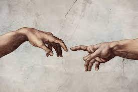
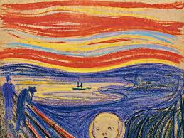
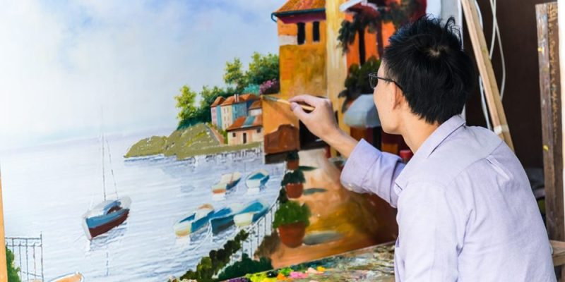
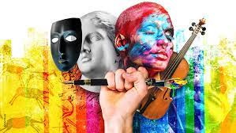

SOMOS EL ARTE Y EL ARTE ES NOSOTROS
 A lo largo de la historia, el ser humano ha tratado de encontrar múltiples formas de expresar sus sentimientos ya sea a través de cosas materiales, verbales o la que nos convoca aquí el día de hoy, el arte. Esta muestra emocional propia del ingenio y la creatividad humana es una de las más amplias y ha llegado a ser plasmada de mil y un formas. Actualmente el arte se divide en siete grupos principales: Arquitectura, escultura, pintura, música, danza, literatura y cine. El arte ha estado presente en la humanidad desde siempre, con ejemplos como las pinturas rupestres, los monumentos y altares de piedra, esculturas e imágenes talladas, etc. Pero a todo esto ¿Qué es el arte? ¿Por qué es arte? ¿Qué es lo bello?.
A lo largo de la historia, el ser humano ha tratado de encontrar múltiples formas de expresar sus sentimientos ya sea a través de cosas materiales, verbales o la que nos convoca aquí el día de hoy, el arte. Esta muestra emocional propia del ingenio y la creatividad humana es una de las más amplias y ha llegado a ser plasmada de mil y un formas. Actualmente el arte se divide en siete grupos principales: Arquitectura, escultura, pintura, música, danza, literatura y cine. El arte ha estado presente en la humanidad desde siempre, con ejemplos como las pinturas rupestres, los monumentos y altares de piedra, esculturas e imágenes talladas, etc. Pero a todo esto ¿Qué es el arte? ¿Por qué es arte? ¿Qué es lo bello?.Para poder responder estos interrogantes es importante recalcar que se debe tener en cuenta la perspectiva y visión del arte de uno de los grandes pensadores de la antigüedad, Aristóteles, y como esta opinión provocó de una forma indirecta que se cambiaran muchos aspectos con respecto a lo que es el arte y como se puede interpretar este mismo. La idea de mimesis o imitación es la concepción de arte para Aristóteles. Se puede describir como una representación artística de la realidad y la naturaleza o también acontecimientos de la historia de la humanidad. Aristóteles utiliza la mimesis y el arte como un método de aprendizaje y ve a estos mismos como un objeto de observación en constante actualización. También ve a los artistas como unos tipos de filósofos, los cuales utilizan para argumentar y expresar su punto de vista sus obras y composiciones que, aunque esta intención no llegue a ser interpretada en su totalidad por el observador, lo importante es que se demuestre esa emoción con algo más que pasión.
Según la RAE (Real Academia Española), el arte es una manifestación de la actividad humana mediante la cual se interpreta lo real o se plasma lo imaginado con recursos plásticos, lingüísticos o sonoros. La definición de la RAE no está tan alejada de la realidad, o lo que Aristóteles y yo consideramos es el arte. La realidad es un tema clave utilizados en las diferentes artes, ya que es fácil de ser interpretado por el espectador dándole una sensación de familiaridad con respecto a lo que fue plasmado.
No solo se plasma la realidad en el arte, uno de los múltiples temas que considero que es uno de los mejores es “Las emociones y sentimientos”. Recordemos que el ser humano es un ser de emociones que da y recibe sentimientos constantemente en su viva diaria. Es muy común que los artistas transmitan estos sentimientos de manera figurativa ya que no podemos ver de forma concreta una emoción. Puede que estos artistas transmitan sus propios sentimientos o también pueden plasmar una emoción de manera general, esto se encuentra muy presente en la música, el dibujo y la pintura.
Esto nos puede llevar a pensar que el arte, es por así decirlo una muestra de algo físico o mental de una persona utilizando recursos materiales para crear una obra que pueda transmitir eso.
En este mundo, todas las cosas presentan características que las hacen únicas e individuales con respecto al resto y uno de estas es la belleza, en el arte es un pilar importantísimo. Ya bien una obra de arte se puede considerar bella teniendo en cuenta la intención que el autor le quiere dar y como esta es recibida por la audiencia. Esto quiere decir que en si la belleza de algo se rige más por la opinión colectiva del espectador que por su real belleza, que en realidad no existe porque lo bello solo aparece hasta que se le considera de esa manera.
Para mí lo bello es lo que se complementa y al unirse con mi ser se siente ese encuentro, no hay cosa mas bella que lo natural dentro de las cosas, cuando uno sabe que eso es perfecto porque si, que al contemplarlo y percibirlo se llega a sentir tranquilidad y fascinación indiscutible. La belleza no solo existe en el arte, podemos considerar a un atardecer de verano en las montañas como algo bello, o todos los buenos momentos que pasamos por seres queridos, también se pueden considerar bellos.
El arte y lo bello es algo muy ambiguo y diverso, todos tenemos puntos de vista diferentes con respecto a lo que podemos llegar a considerar arte o bello.
En conclusión, podemos llegar a decir que el arte tiene su esencia en el ser humano mismo y el cómo este logra interpretar y expresar sus ideas y emociones a través de composiciones ya sean de alta o simple dificultad, pero que aún si puedan llegar a tener algo de belleza expresada por un espectador ajeno que le pueda llegar a encontrar algo de bello, también es necesario que este espectador o que el mismo autor considere a esta obra como algo de arte. Por esta razón nosotros somos el arte y el arte es nosotros. Ya que somos quien considera lo que es arte y lo que no y a su vez somos quienes le damos su belleza e individualidad.
AUTOR: BRAYAN ACEVEDO
"EL ARTE ES MI SENTIMIENTO"
El arte es un mundo que pocos entienden, a veces la vida nos lleva al encuentro con alguna pintura, canción o una danza, que nos pone a pensar en su verdadero significado. De repente nos encontramos con sentimientos de empatía, comprensión e identificación; esto se debe a la teoría del arte como expresión, esta cobra vida hacia finales del siglo XIX., el arte se manifiesta en sentimientos y experiencias del autor, pero, ¿cómo público, espectador y amantes del arte lograremos entenderlo?
Es normal y entendible que tengamos sentimientos encontrados con el arte, los pequeños detalles, como las pinceladas, colores, trazos, formas, son las que nos hacen sentir esas emociones; ¿lograremos colocarnos en la posición del artista y verla de la misma forma que él? No, desde mi punto de vista no es posible, ya que somos personas con debilidades, puntos y opiniones críticas diferentes; si colocamos a cinco personas a ver una pintura, algunas de ellas probablemente podrán describir aquello que ven, y otras más analíticas dirán sentimientos, quizás unos más acertados a la perspectiva del artista, pero me cuesta creer que razonen y entiendan de la misma forma. El arte abstracto es un ejemplo, muchas veces solo se ven líneas, puntos y curvas, de diferentes colores, tamaños y grosores, todos únicos y diferentes, y ahí el ojo público, se coloca en un estado crítico tratando de buscarle una forma cotidiana y realista, cuando en ella puede expresarse sentimientos de rabia, ansiedad, emoción, euforia, y cualquier sentimiento que tu alma y mente te permita dar, y le puedes asignar el significado que tu corazón te dé y nadie te juzgara ya que si lo vez de esa forma es porque esa es tu verdad.
¿Los colores importan? Si y mucho, ya que las personas solemos decir que los colores cálidos (rojos, anaranjados, amarillos) se pueden clasificar como colores vitales, alegres y activos, los colores fríos (verdes, azules, violetas) nos producen una impresión de reposo, alejamiento y calma, y utilizados solos pueden darnos un efecto de poca intimidad y de tristeza y los colores neutros (blancos, grises, negros) nos pueden dan a entender pureza, elegancia, poder, soledad o vacío; si tenemos los colores en cuenta nos podemos dar una primera impresión y lo que puede expresar, ya que nuestro cerebro constantemente relaciona los colores con los estados de ánimos, pero no te dejes engañar detrás de un lindo tono de amarillo de cromo puede tener una historia muy diferente.
De acuerdo a lo anterior, daré dos ejemplos, para el primero usaremos nuestra imaginación, con el poder de tu mente te transportaras a un escenario que te traiga felicidad y alegría, pero colócale un filtro azul, deja de ser tan feliz ¿no? Cambia un poco la perspectiva, pero eso no quiere decir que deba ser triste. Y el segundo ejemplo consiste en una teoría de Vincent van Gogh y el amarillo, él es creador de “La noche estrellada”, “Los comedores de patatas”, entre muchas más, no entraremos en la biografía de él, pero podremos decir que su vida no fue muy feliz, como lo mencionamos anteriormente, el color amarillo es un color que asociamos con la alegría, a felicidad, con la juventud, creatividad y diversión, pero a su vez es un color contradictorio, ya que también es un color que representa peligro, toxicidad, dicen que simboliza la traición y el egoísmo; ¿que tiene que ver con Vincent? Bueno teniendo en cuenta que él tuvo una vida difícil y solitaria, se dice que lo que buscaba era ser feliz como el mismo color, y por esta razón lo usaba comúnmente en todo, tonos de piel, flores, objetos, campos, luces, la luna y las estrellas, ¿pero sus pinturas aun usando este color considera usted que son pinturas que nos expresan ese sentimiento de alegría y conformidad?
 ¿Y una canción puede expresar mi estado de ánimo? Si, todo depende de ti, muchas veces decimos “esta canción, no es solo una canción, es un sentimiento” quizás a la hora de interpretar una canción el trabajo no es tan tedioso, ya que la letra se explica sola, y por eso al momento de cantarla es normal que nos expresemos, gritemos o lloremos la letra de esta misma, ya que nos colocamos de manera instantánea en sintonía con la canción, momentos del pasado o presente se ven reflejados y esto hace que estemos plenamente metidos en la canción.
¿Y una canción puede expresar mi estado de ánimo? Si, todo depende de ti, muchas veces decimos “esta canción, no es solo una canción, es un sentimiento” quizás a la hora de interpretar una canción el trabajo no es tan tedioso, ya que la letra se explica sola, y por eso al momento de cantarla es normal que nos expresemos, gritemos o lloremos la letra de esta misma, ya que nos colocamos de manera instantánea en sintonía con la canción, momentos del pasado o presente se ven reflejados y esto hace que estemos plenamente metidos en la canción.Como lo dije anteriormente. el color engaña, ¡no? Bueno, pues al oído le ocurre una situación similar, ya que solemos asociar las melodías enérgicas con una letra feliz y alejada de lo triste y melancólico, melodías lentas y calmadas con letras tristes, de rupturas, soledad o melodías empoderadas que las asociamos con temas de revolución, temas sociales, que algo llega a su fin o pensamos en himnos. Pero muchas veces nos ocurre que las melodías mienten, y una situación muy cotidiana que representa esto, es cuando escuchamos música con idiomas del extranjero, inglés, francés, coreano entre otros, ya que al no saber una lengua extranjera solo nos dejamos llevar por la melodía de la canción.
El arte es maravilloso y el artista desea que su obra sea admirada y sientas lo que el trata de trasmitir, el precio monetario es casi inexistente a comparación del tiempo dedicado a su contemplación, cada pequeño detalle quizás tenga un por qué y muchas veces lo que vemos y escuchamos no tienen significados literales, como espectadores podemos darnos cuenta de las teorías, historias, emociones, que con la vista que nuestro corazón y alma nos permite apreciar; el arte tiene muchas ramas y en todas de estas se deben disfrutar, sentirlas, que tu entendimiento e imaginación fluya como el viento tu eres el que tiene la última palabra y tú decides en que creer; si intentas hacer arte y no te logran entender no estás loco, quizás tu arte no es para esta generación.
AUTORA: ASHLY ISABELA URIBE BAYONA.
"EL ARTE COMO EXPRESIÓN"
En algunas ocasiones las palabras no son capaces de expresar lo que sentimos, es por eso que la manera mas fácil de sacar de nuestro interior, nuestro ser y nuestra alma es a través del arte, que es la forma más especial y sencilla de expresar todo lo que sentimos dentro de nuestro ser y queremos dar a conocer a los demás. El arte es plasmar en una creación artística lo que llevamos dentro haciendo una prolongación de nosotros mismos a través del él.
El arte como expresión es hoy en día la forma más fácil de expresarnos para mostrar nuestros sentimientos y pensamientos a los demás.
Se ha podido comprobar que una creación artística es capaz de mostrar la belleza de los pensamientos y llevarnos a lugares inimaginables e inalcanzables, es esa conexión entre el alma y nuestros sentidos puesto que las palabras en la mayoría de ocasiones no alcanzan a expresar las mas profundas emociones que llegamos a sentir los seres humanos, las palabras son cortas para todo lo que expresamos en la obra el arte, las palabras no alcanzan a mostrar de forma directa lo que el ser humano siente en su interior y las emociones que habitan en su alma y su ser, por ello el arte como expresión lo puede llegar a mostrar todo sin necesidad de decir una sola palabra.
Se puede considerar que el arte llega a ser un estimulo para la persona que lo observa porque pueden revivir vivencias, emociones, sensaciones, dolores, tristezas que las palabras no alcanzan a mostrar, a través de ello se puede descubrir lo que se quiere interpretar de todo ser humano que plasme una expresión a través de una forma artística, la gran mayoría del arte es capaz de atraer nuestra atención, es capaz de transportarnos a un mundo diferente , es capaz de hacer volar nuestra imaginación para creer que todo es posible, que todo es fácil, nos transporta a lugares mágicos donde quisiéramos estar y conocer sin necesidad de hacerlo de forma física.
Sin duda alguna, el arte no tiene límites, así como nuestra imaginación, pues no esta rodeada de barreras, podríamos decir que los seres humanos podemos llegar a sentir tanto y cambiar nuestro pensamiento a través del arte que podría devolvernos la salud, las ganas de vivir, las ganas de sentir, el arte nos puede transformar y hacernos seres humanos mas felices, llenos de alegría, llenos de ganas de vivir, el arte es capaz de volvernos personas con propósito de vida, con ganas de podernos expresar sin miedo hacer criticados en la sociedad en la que hoy vivimos la cual esta llena de personas insensibles y con pensamiento débil.
En síntesis, gracias al arte podemos ser mejores personas, podemos expresarnos libremente sin llegar a qué nos critiquen, podemos expresar lo que queramos y sentirnos libres de hacerlo, podemos acercar mundos, países y personas que quieren sentirse vivos cada día de su vida, podemos lograr una conexión entre el alma y el cuerpo que nunca alcanzaremos a obtener por medio de las palabras, podremos ser lo que queramos por medio del arte, un arte que nos hace sentir vivos día a día, más sensibles y por supuesto, mas humanos.